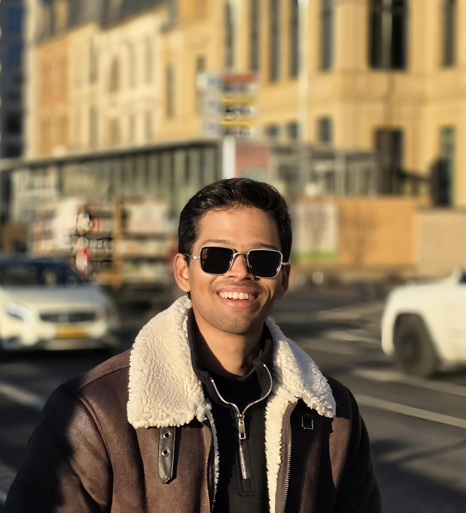

Poorna Sasank Sesetti
Robotics / Computer Vision
I build perception and state-estimation systems from first principles: SLAM, LiDAR perception, 3D reconstruction, and open-vocabulary mobile manipulation. Right now I am a master's student turning ideas into working robots, and writing down how I do it.

Get in touch
I'm always up for conversations about robotics, perception systems, or collaborations, and currently open to working-student and robotics engineering roles. The fastest way to reach me is email.
Currently
Language-conditioned grasping and navigation on the Toyota HSR. Scene graphs, Nav2 navigation, and a two-phase grasp pipeline. Lab project at Uni Bonn.
Master's at the University of Bonn. Focus: SLAM, LiDAR perception, Computer Vision, and 3D reconstruction.
A long-form series documenting an incremental Structure-from-Motion pipeline, demystifying the math with the code chapter by chapter.
Merging airborne and mobile LiDAR scans of a 10 km Bonn corridor into one clean point cloud for 3D building reconstruction. Built a streaming PDAL pipeline so it processes at that scale without loading everything into memory.

Open-Vocabulary Mobile Manipulation on the Toyota HSR. Scene graph from iPad scans, Dockerised inference containers over HTTP, geometric → AnyGrasp pipeline.

Streaming point-cloud processing over a 10 km Bonn corridor (ALS + MMS), GPU tensor ops, ground filtering, and parallel tiled processing.

Incremental Structure-from-Motion. SIFT matching, RANSAC essential matrix, triangulation, and bundle adjustment. Documented as a blog series.

Filter-based SLAM framework with a clean Python core and a thin ROS 2 wrapper, 25-test suite, documented after Thrun's Probabilistic Robotics.